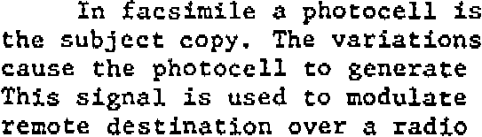

Tweet
Tweet
The images from (digital) photo cameras are an example where no scan is needed to perform OCR. You transfer the snapshots to your PC and open them directly with your OCR software.
There are other similar applications: think of images you may have received via e-mail, image batches that were scanned with a high-end document scanner and made available to you on a network server, fax files generated by fax software etc.
Your OCR software will indeed open a number of image files as well: JPEG images, TIFF images, Windows bitmaps (*.bmp), Paintbrush images (*.pcx), DCX faxes etc. The list of supported graphic formats varies from one OCR package to the next, but the most common graphic formats are always supported.
“Normal” faxes have a 100 x 200 dpi resolution, “fine” faxes have a 200 x 200 dpi resolution and the “superfine” faxes (found on Panasonic machines) have a 200 x 400 dpi resolution. Ask your correspondents to send faxes with the “fine” quality if you can, you’ll get a higher image quality than with “normal” faxes. (It takes twice the telephone time to transmit these faxes.)
You may have noticed that the horizontal and vertical resolution are not always equal with faxes. A small recap: the horizontal resolution indicates the number of samples taken by the sensor array on a linear inch. The vertical resolution refers to the mechanical stepping of the fax machine’s carriage motor.
Fax machines can stop the scanning head more as they move down the page than the horizontal resolution, but make no mistake. It’s always the smallest of the two resolutions that determines how fine the image raster is. Sampling an image more frequently in only one direction doesn’t give you more detail, it just degrades the characters. See what kind of distortions are caused by these unsymmetrical resolutions…

Some OCR packages will optimize fax images before the recognition. Preprocessing routines invisibly apply to faxes to correct their low and asymmetric resolution. (Still, ask your correspondents to send faxes with the “fine” quality if you can, you’ll get a better result than with “normal” faxes.)
By the way, don’t print your faxes on a laser printer to scan them in at 300 dpi. When the image quality initially is low, printing and scanning them at a higher resolution isn’t going to add detail!
Other factors contribute to the bad quality of many faxes: much of the noise in fax files is caused by bad telephone lines. (The problem may be the outlet in your wall or anything else along the way: only your telephone company may tell...) Also know that faxes are often thermally (read: poorly) printed by the receiving fax machine.
Training the system further — The accuracy of OCR software — How good are your scanning skills? — With a little help from the friends — Recognizing snapshots — Recognizing prescanned images and faxes — Repurposing PDF files
Home page — Intro — Scanners — Images — History — OCR — Languages — Accuracy — Output — BCR — Pen scanners — Sitemap — Search — Contact – Feedback